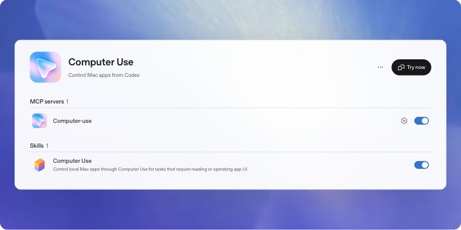

GUIDE 01
Computer Useの導入画面を開く
ChatGPTデスクトップアプリのWorkまたはCodexで、Plugins → Computer Useを開き、公式のInstall / Enable手順へ進みます。
- MCP servers内のComputer-useを有効にします。
- Skills内のComputer Useも有効にします。
- 両方が有効になったら、公式図の「Try now」から試します（表示は版によって異なる場合があります）。
これはOpenAI公式ドキュメントの図を撮ったものです。このMacの実画面ではありません。出典：OpenAI公式（2026-10-09閲覧）。項目自体が見つからない場合は、デスクトップ版のWork／Codexを使っているかと、地域・組織での提供状況を確認します。
